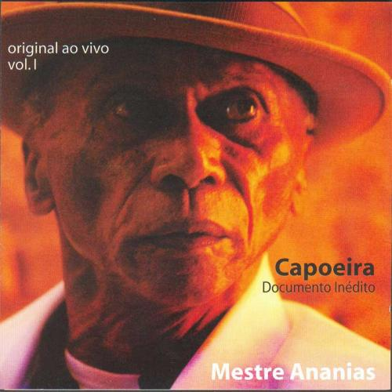

Песня в розыске №2: Mestre Ananias — Tinha meu dinheiro (концовка)

Камрады, помогите разобрать последнюю часть песни «Tinha meu dinheiro». Песню исполняет Mestre Ananias на первом альбоме «original ao vivo, vol 1». Это первый трэк, он начинается с ладаиньи, потом переходит в корридуш и в конце трэка (04:00) играет нечто божественное и кандоблийское ;)
Песню можно послушать здесь — http://vpleer.ru/?q=Mestre+Ananias+Tinha+meu+dinheiro
Скачать альбом можно легко в сети, ищите по названию.
С меня презент из Китая ;) Спасибо!